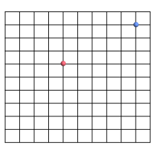
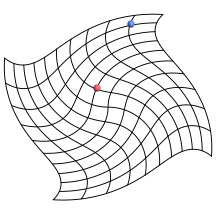
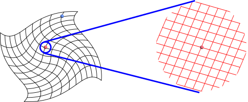
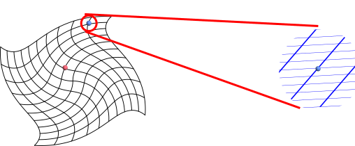
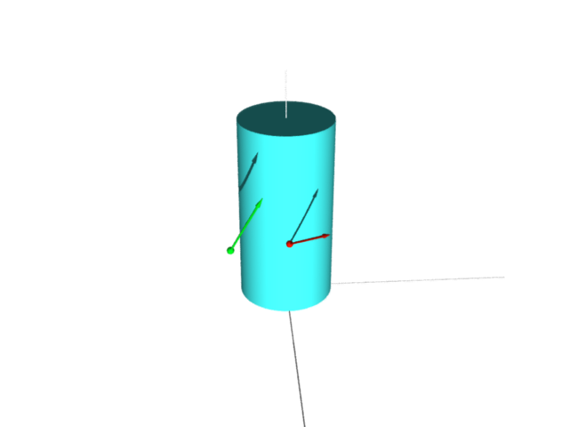

আমরা 1-form নিয়ে মাথা ঘামাচ্ছি কেন? কারণ differential geometry-তে এদের নানা প্রয়োগ৷ এক্ষুণি একটা
প্রয়োগ দেখতে চলেছি আমরা৷
আমরা স্কুলে থাকতে যখন $\frac{dy}{dx}$ লিখি, তখন আমাদের বলা হয় যে $dy$ আর $dx$
বলে আলাদা করে কিছু হয় না৷ যদিও $y=x^2$ হলে আমরা অনেকসময়ে $dy = 2x dx$ লিখে থাকি, কিন্তু সেটা
নিতান্তই symbolically. কিন্তু differential geometry-র জগতে $dy,$ $dx$
ইত্যাদিদের সত্যিই আলাদা অস্তিত্ব আছে, এবং $dy = 2x dx$ ব্যাপারটা মোটেই আর কথার কথা থাকে না৷ এবার সেটাই
শিখব৷ তার জন্য আমাদের এতক্ষণের আলোচনাটাকে খানিকটা generalise করতে হবে৷ এর ফলে অংক কষাটা আসলে সহজ
হয়ে যাবে, কিন্তু ছবি দিয়ে ভাবাটা বন্ধ হয়ে যাবে৷
আমরা এতক্ষণ surface নিয়ে কাজ করছিলাম, মানে দুটো variable
থাকছিল, $u$ আর $v,$ এবং তাদের থেকে তিনটে variable বানাচ্ছিলাম, $x,$ $y$
আর $z.$ অর্থাৎ ব্যাপারটা ছিল ${\mathbb R}^2\rightarrow{\mathbb R}^3.$ সেখানে আমরা ধরে নিয়েছিলাম যে $x(u,v),$
$y(u,v)$ আর $z(u,v)$ তিনজনেই differentiable এবং এই দুটো vector একই লাইনে
নয়--
$(\paru x,\paru y,\paru z)$ এবং $(\parv x,\parv y,\parv z).$
এই ব্যাআরটাকেই এবার আমরা নকল করব ${\mathbb R}^2$ থেকে ${\mathbb R}^2$-তে৷ অর্থাৎ এবার কাজ করব $x(u,v)$
আর $y(u,v)$ নিয়ে৷ সেক্ষেত্রে সাবধান থাকতে হবে যেন এই দুটো vector এক লাইনে হয়ে না যায়--
$(\paru x,\paru y)$ এবং $(\parv x,\parv y).$
এদের মধ্য দিয়ে যে plane-টা হবে সেটাকেই বলব tangent plane. এই ব্যাপারটা ছবি দিয়ে অনুভব করা
অনেকটাই বেশী কঠিন৷ তাও একটা চেষ্টা করা যাক৷
আমরা শুরু করছি $(u,v)$-plane নিয়ে, যেটাকে একটা
গ্রাফ কাগজ বলে ভাবা যায়--

এটা যেন একটা বাড়ীর টাইল বসানো মেঝে৷ এবার হঠাৎ ভূমিকম্প হল৷ টাইলগুলো দুমড়ে মুচড়ে হয়ে গেল এরকম--

এবার ধরা যাক একটা ছোট্টো পিঁপড়ে থাকে ওই লাল বিন্দুটাতে৷ সে তো আর পুরো মেঝেটা দেখতে পাচ্ছে না৷ তার কাছে মনে হচ্ছে
যেন টাইলগুলো বদলে এরকম হয়ে গেছে--

এইটাই হল ওই বিন্দুতে tangent plane. আবার নীল বিন্দুর পিঁপড়েটা ভাবছে টাইলগুলো এখন এরকম দেখতে--

আমরা যখন surface নিয়ে আলোচনা করেছিলাম, তখনই বলেছিলাম যে tangent plane-গুলোকে ${\mathbb R}^3$-র
subset বলে কল্পনা করা উচিত নয়, দুই চূড়ার দুই সন্ন্যাসীর উদাহরণে তাহলে দুটো tangent plane
একই হয়ে যেত৷ সেই কথাটা এইক্ষেত্রে আরো বিশেষভাবে মনে রাখতে হবে, কারণ এখানে ${\mathbb R}^2$-এর subset
হিসেবে ভাবলে সবগুলো পিঁপড়ের tangent plane-ই একই৷ আরেকটা পার্থক্যও আছে৷ আগে আমরা tangent vector
দিচ্ছিলাম $(p,q)$ আকারে, যেখানে $p,q\in{\mathbb R}^3$-কে দুটো শর্ত পালন করতে হচ্ছিল--
এক, $p$-কে থাকতে হবে surface-টার গায়,
আর দুই, $q$-কে সেই $p$ বিন্দুতে surface-টার সঙ্গে tangent হতে হবে৷
যেমন নীচের ছবিতে যে দুটো তীরচিহ্ন এঁকেছি তারা কেউই tangent vector নয়৷

সবুজটার গোড়াতাই surface-এর গায় নেই৷ লালের গোড়াটা surface-এর গায় আছে বটে, কিন্তু ওটা tangent
নয়৷
কিন্তু ${\mathbb R}^2\rightarrow{\mathbb R}^2$-র বেলায় এই দুটো শর্তটা সর্বদাই পালিত
হবে৷ তাই যেকোনো $p,q\in{\mathbb R}^2$ নিলেই $(p,q)$ একটা tangent vector
হবে! সেই কারণে অংক করাটা সহজ,
কিন্তু tangent বলতেই যে চিত্রটা মনে ভেসে ওঠে তার সাথে একে মেলানো কঠিন৷ মনে
হয় যেন, যদি যেকোনো $p,q\in{\mathbb R}^2$
নিলেই চলে, তবে আর খামোখা ঘটা করে tangent vector নাম দেওয়ার দরকার কী বাপু! দুঃখের কথা, অধিকাংশ
বইই tangent vector-র এই ''গাণিতিকভাবে সহজ'' সংজ্ঞাটা নিয়েই শুরু করে, ফলে ছাত্রছাত্রীদের বুঝতে খানিকটা
অসুবিধা হয়৷
চাইলে আমরা একই ব্যাপার ${\mathbb R}^n\rightarrow{\mathbb R}^n$-ও করতে পারতাম৷ সেক্ষেত্রে $(u,v)$-এর বদলে শুরু করতাম $(u_1,...,u_n)$
নিয়ে আর তাদের function হিসেবে লিখতাম $(x_1,...,x_n)$-কে৷ আমাদের শর্তটা তখন হত, এই $n$-খানা
vector যেন linearly independent হয়--
$$\left(\parui {x_1},...,\parui {x_n}\right).$$
এবার আমরা একটা বিশেষ ধরণের 1-form-এর সংজ্ঞা দেব৷ আমরা কাজ করব ${\mathbb R}^2$ নিয়ে, যদিও যেকোনো
${\mathbb R}^n$ নিয়েই একই কাজ করা যায়৷ যেকোনো একটা $f:{\mathbb R}^2\rightarrow{\mathbb R}$ নাও, যেটা
differentiable. (সাবধান, codomain-টা কিন্তু ${\mathbb R},$ ওখানে
${\mathbb R}^2$ নিই নি)৷ আমরা
$df$-এর একটা গাণিতিক সংজ্ঞা দেব৷ চট্ করে মনে করে নিই, স্কুলে থাকতে এরকম differential-দের কী
গোঁজা দেওয়া সংজ্ঞা আমরা শিখি৷ গতিবেগের সংজ্ঞায় যখন $v = \frac{ds}{dt}$ বলা হয়, তখন তার সাথে একটা গল্প
থাকে এইরকম--
যদি $t$ থেকে খুব অল্প একটু (খুব খুব অল্প, এট্টুখানি!) পরিমাণ $dt$ এগোই, তবে
সরণের পরিবর্তনকে বলব $ds.$ আর জানোই তো সরণের পরিমাণকে সময়ের পরিমাণ দিয়ে ভাগ করলেই বেগ পাওয়া যায়,
অতএব বুঝে গেলে $v=\frac{ds}{dt}$, ঠিক কিনা?
ঠিক কেউই বোঝে না ব্যাপারটা কী হল, কিন্তু মাথা নেড়ে দেয়, এবং $\frac{ds}{dt}$ ব্যবহার করে অংক করে পরীক্ষায়
পাশও করে যায়৷ ওদিকে অংকের স্যার (বা দিদিমণি) চোখ পাকিয়ে বুঝিয়ে দেন যে $ds$ বা
$dt$ বলে আলাদা করে কিছু হয় না, ওই $\frac{ds}{dt}$-টা একটা
notation মাত্র৷ সব মিলিয়ে মাথাটা পুরোই কেমন গুলিয়ে যায়৷
এবার আমরা এরকম differential-এর rigourous সংজ্ঞা শিখব৷ তাতে এই ''খুব অল্প একটু পরিবর্তন''-এর
ধারণাটাও বজায় থাকবে অথচ ধোঁয়াশা ধোঁয়াশা ব্যাপারটাও থাকবে না৷
আমরা কাজ করছি $f:{\mathbb R}^2\rightarrow{\mathbb R}$ নিয়ে৷ আমরা $df$-এর সংজ্ঞা দিতে চাইছি৷ মূল যে ধারণাটা অংকের
ভাষায় বেঁধে ফেলতে চাইছি, সেটা হল $(x,y)$ সামান্য একটু বদলালে $f(x,y)$ কতটা বদলায়৷
প্রথমেই জানা দরকার কোথা থেকে বদলানোটা শুরু করছি, মানে বদলানোর আগে $(x,y)$ কী ছিল৷ দ্বিতীয় জিনিসটা
যেটা জানা দরকার সেটা হল বদলানোটা কোন দিকে হয়েছে, $x$-এর দিকে, নাকি $y$-এর দিকে, নাকি $x,y$
দুজনেই সমানভাবে বেড়েছে (মানে গ্রাফ কাগজে উত্তর-পূরব দিকে সরেছে), নাকি অন্য কোনোভাবে৷ ধরা যাক, বদলানোর আগে
ছিলাম $(a,b)$-তে, মানে $x=a$ আর $y=b$ ছিল৷ আমরা খুব সামান্য নড়ব, মানে ওই বিন্দুতে যে
পিঁপড়েটা বাস করে তার দৃষ্টিভঙ্গীতে দেখব ব্যপারটা৷ অতএব যে দিকেই সরি না কেন, সেটাকে একটা
tangent vector বলে ভাবা যায়৷ ধরা যাক এরকম একটা tangent vector নিলাম
$((a,b), (r,s)).$ পিঁপড়েটা এবার ভাবছে যে, সে $(a,b)$ থেকে
$(r,s)$ বরাবর হাঁটবে, $1$ একক সময় পরে সে $(r,s)$ তীরচিহ্নটার ডগায় পৌঁছবে,
$2$ একক পরে সেই একই দিকে তার দ্বিগুণ দূরত্ব যাবে, এইভাবে৷ তাহলে $t$ সময় পরে সে থাকবে $(a,b)+t(r,s)$-এ৷
সেখানে $f$-এর মান হবে $f(a+tr,b+ts).$ এখানে $a,b,r,s$ সবাই স্থির আছে, খালি $t$-টাই
variable. তাই এটাকে $t$-এর function আকারে লিখলে হবে $g(t)=f(a+tr,b+ts).$
পিঁপড়েটা ভাবছে এইসব কথা৷ প্রশ্ন হল যদি সে সত্যিই এভাবে হাঁটা শুরু করে, তবে $g(t)$-টা কী হারে বাড়তে
শুরু করবে?
সেটা হল $g'(0).$ একটু কষলেই পাওয়া যাবে $g'(0) = f_1(a,b)r + f_2(a,b)s,$ যেখানে $f_1$ আর
$f_2$ হল $f$-এর দুটো partial derivative. তা হলে কী এই $f_1(a,b)r + f_2(a,b)s$-কেই
$df$ বলব৷ কিন্তু এর মধ্যে তো $a,b,r,s$ রয়ে গিয়েছে! তাই আমরা এই ফর্মুলার ''চেহারা''-টাকে বলব $df.$
আমরা বলব $df$ হল একটা 1-form, যেটা যেকোনো $(a,b)$-তেই একটা linear transform
দেয় $(r,s)\mapsto f_1(a,b)r + f_2(a,b)s.$ অর্থাৎ $df$ হল একটা function, যার মধ্যে $((a,b),(r,s))$
জাতীয় কোনো tangent vector ঢোকালে উত্তর পাবে $df((a,b),(r,s)) = f_1(a,b)r + f_2(a,b)s.$
কয়েকটা উদাহরণ না দেখলে আর চলছে না!
EXAMPLE: যদি $f(x,y)=\sin(xy)$ নিই, তবে $df((1,2),(3,4))$ বার করো৷
SOLUTION:
সহজ ভাষায় বললে, $(1,2)$ থেকে $(3,4)$ বরাবর চলা শুরু করলে $f(x,y)$ কী হারে বাড়বে?
এখানে $f_1(x,y) = y\cos(xy)$ আর $f_2(x,y) = x\cos(xy).$ সুতরাং উত্তর হল $df((1,2),(3,4)) = 2\cos(2)\times 3 + \cos(2)\times 4 = 10\cos 2.$
এবার আরেকটা উদাহরণ দেখা যাক৷ এটা আরো সহজ৷
EXERCISE: $f(x,y)=x$ নিচ্ছি এবার৷ $df$ কী হবে? মানে যেকোনো
$((a,b),(r,s))$-এর জন্য $df((a,b),(r,s))$-এর ফর্মুলা দিতে হবে৷
EXERCISE: যদি $f(x,y)=y$ নিতাম, তবে?
এবার ধরা যাক একটা ডেঁয়ো পিঁপড়ে তরতরিয়ে ${\mathbb R}^2$-র উপর দিয়ে হেঁটে বেড়াচ্ছে৷ এটা ডেঁয়ো পিঁপড়ে, তাই এক
জায়গায় বসে বসে tangent plane নিয়ে সন্তুষ্ট থাকার পাত্র নয়৷ $t$ সময়ে তার অবস্থান হল $(x(t),y(t)).$
তবে সেই মুহূর্তে $f$-এর value সে দেখবে, $f(x(t),y(t)).$ এরকম
ক্ষেত্রে আমরা chain rule থেকে জানি যে $\frac{df}{dt} = f_1(x(t),y(t)) \frac{dx}{dt}+f_2(x(t),y(t)) \frac{dy}{dt}$
হয়৷ এ থেকে অনেক সময়েই ''$dt$-টা কেটে নিয়ে'' লোকে ধাঁ করে লিখে দেয়
$$df = f_1(x(t),y(t)) dx+f_2(x(t),y(t)) dy.$$
অবশ্যই সেই সঙ্গে বিধিবদ্ধ সতর্কীকরণ থাকে-- এটার আসলে কোনো মানে হয় না, নিতান্তই symbolically লেখা৷
মজার কথা হল আমরা এখন যে $df,$ $dx$ আর $dy$-এর সংজ্ঞা শিখেছি, তাতে কিন্তু সত্যিই
$df = f_1(x(t),y(t)) dx+f_2(x(t),y(t)) dy$ হবে! আর কোনো গোঁজা নেই এর মধ্যে!
EXERCISE: একই কায়দায় এখন $y = x^2$ হলে কি $dy = 2x dx$-এর ভদ্র ব্যাখ্যা দেওয়া যাচ্ছে?
মন্তব্য
নীচে একটা মন্তব্য দেওয়ার জায়গা রয়েছে. দেখে মনে হবে যেন তার জন্য আগে log
in করতে হবে. যদি তাতে আপত্তি থাকে, তবে ওই "Name"-এর জায়গায় একবার
click করলেই "I'd rather post as a guest" বলে একটা option আসবে.